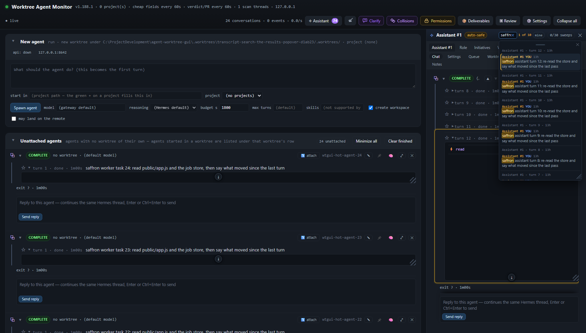
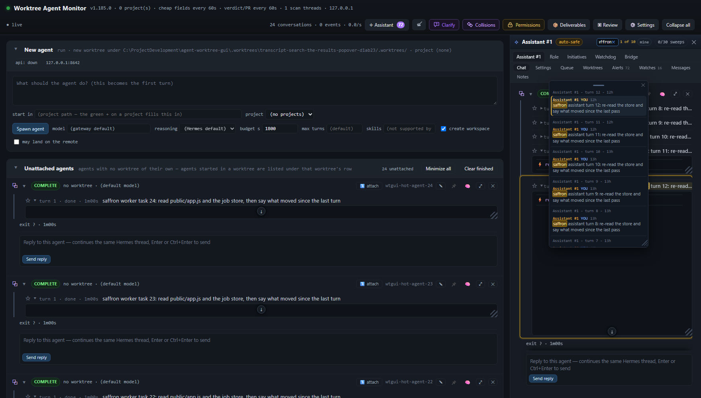
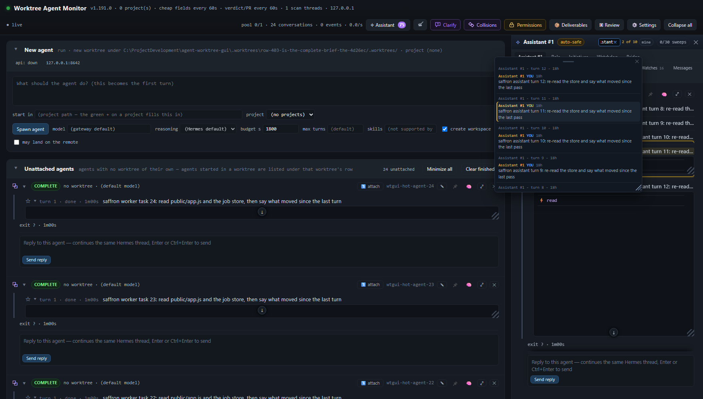
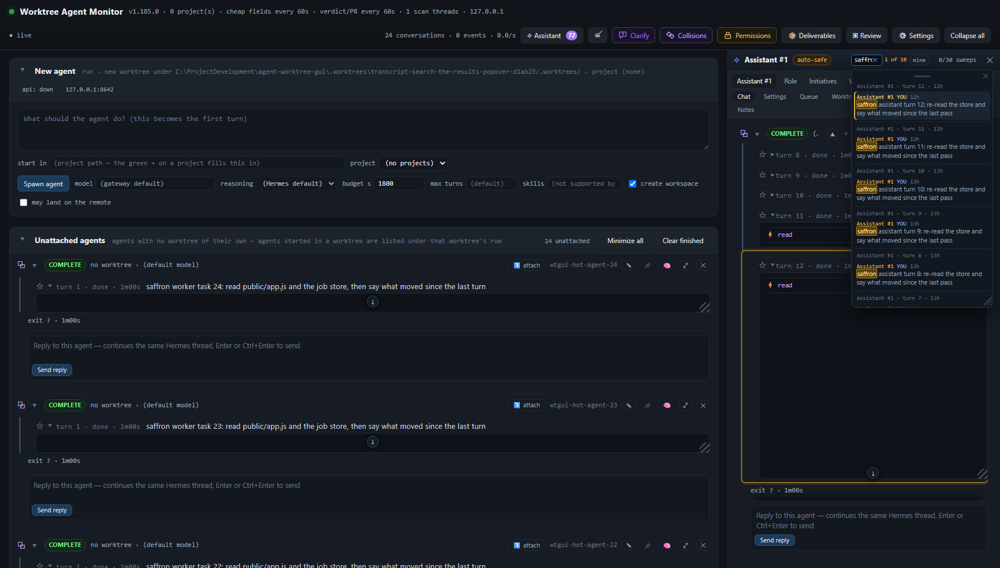
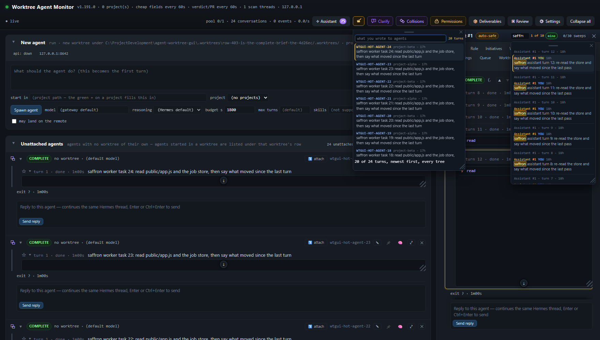
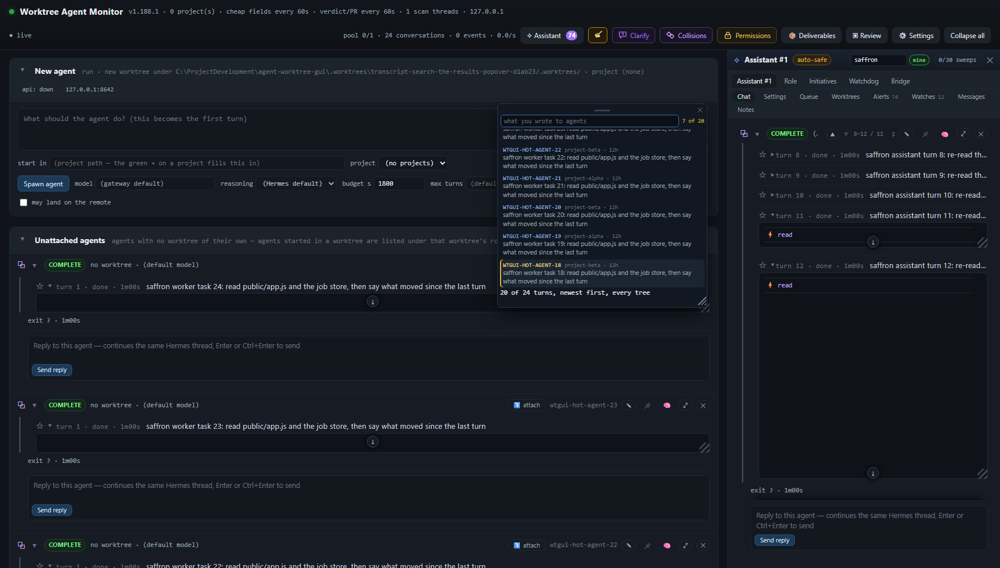
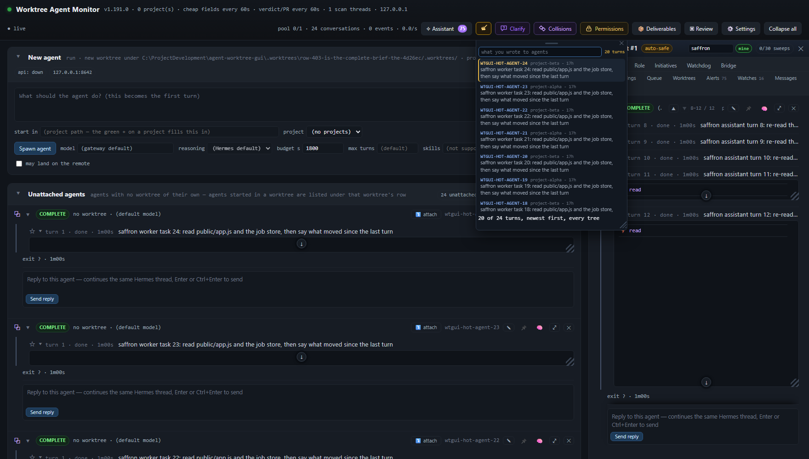

The search popover opens under its box
agent-worktree-gui, 2026-11-27. Both header searches used to align their results popover to the RIGHT edge of a control that is wider than the box, so a popover wider than the box grew LEFTWARDS: 140px left of the turn search's input and 296px left of the Hot Agent opener. It now opens at the box's own left edge, and the reader can move it, resize it and close it; every close forgets the reader's rectangle.
- branch
wtgui/transcript-search-the-results-popover-d1ab23, cut from20261127_1422_TASK-371_build-the-initiative-tag- base measured
609dfff7(the turnover tip this tree was cut from) vs this tree's working copy- version
- 1.188.1 (above the turnover branch's 1.188.0, which moved after this tree was cut)
- viewport
- 1760 x 1000, deviceScaleFactor 1, headless Chromium
- the gate
node tools/verify-search-popover.mjs- 52 checks, 52 passed, 7 screenshots,docs/assets/search-popover/run.json- the files
public/core/search-popover.js(the rule, the chrome, the drag/resize/reset),public/assistant.js:708and:1392(the two anchors),public/style.css:7715(the chrome's scoped section),test/search-popover.test.js
The defect, as the code stated it
The shared module's own header said the popover aligned with "the whole .as-search span, not the input", and the arithmetic aligned RIGHT edges (search-popover.js before this cut, placeGeometry: right = min(viewport - pad, box.right), left = right - width). The assistant's .as-search span is 138.5px wide while its input is 55.6px, and the Hot Agent opener is a 34px button, so a 250px or 330px popover always grew to the left of the box it belonged to.
Measured on the base export with getBoundingClientRect, same probe, same seeded store, both bars:
| bar | the box | box left | popover left before | off the box before | popover left after | off the box after |
|---|---|---|---|---|---|---|
turn search (#as-search-q) | the input itself, 55.6 x 20 | 1503.5 | 1363.5 | 140.0 left | 1503.5 | 0.0 |
Hot Agent (#ha-search-open) | the opener button, 34 x 28 | 1035.2 | 739.2 | 296.0 left | 1035.2 | 0.0 |
The assistant popover also ended at the .as-search span's right edge (1642.1), which is 111.4px left of where the input ends: with the input at the far right of a wide bar, the list sits at the pane's left half and the box is nowhere near it. On the Hot Agent bar the same rule put the popover 296px left of a button the reader had just pressed.
The rule now
public/core/search-popover.js:88 (placeGeometry) takes the box's own rectangle and answers:
left = clamp(box.left, pad, viewport - pad - squeeze)- the popover's LEFT edge opens at the box's left edge, so it can never start left of the box while the window can still hold its narrowest placement.width = min(want, room), withwant = clamp(boxWidth + 140, 250, 380)androomthe space to the window's right edge - a tight window SQUEEZES the list (down to 160px) rather than sliding it back under the pane. The assistant's bar leaves 248.5px when its count is showing, and the measured width is 248.5px at the input's own left edge.top = round(box.bottom + 6), clamped so the popover's minimum height fits - the top edge is the measured 121px against the input's bottom 114.7px (6.3px).maxHeight = max(120, min(42% of the window, room below)), unchanged.
public/assistant.js:708 passes anchor: input for the turn search. The Hot Agent bar at :1392 passes its opener button, because its input lives INSIDE the popover: the rule places the popover's left edge at the button's left edge and its top 6px under the button's bottom, and the popover's own head box lands 6px inside that span.
Moved, resized, reset
The popover now carries its own chrome, drawn once by the module (ensureChrome, search-popover.js:184) and skinned in one scoped section of public/style.css:7715:
- A 14px drag strip across the top (
[data-search-drag]) with the close x at its right. The strip isposition: stickybecause the turn-search popover is its own scroller: both controls stay reachable when the walk scrolls the list past the fold. - A 16x16 hit box in the bottom-right corner (
[data-search-grip]), drawn as a triangle by::afterso the whole box is the drag target rather than only the visible corner. - A drag writes
{left, top, width, height}(dragGeometry,:114); a grip drag keeps the top-left and grows the rectangle, with 250 x 120 as its floor and the window as its ceiling (applyMoved,:227). A move keeps the list's natural height under its cap; a resize sets an explicit height. hide()(:340) andresetPlacement()(:326) forget the rectangle and the size, so a reopen draws the anchored default. The turn search's scope chip callsresetPlacement()(public/assistant.js:1337) so a new scope is drawn at the default even though the list stays open.- The x calls the bar's own close (
onClose):escapeSearchfor the turn search (clear the filter, caret back in the box),hotEscapefor the Hot Agent bar (clear, focus back on the opener). - The strip's mousedown is preventative and its listener is on the document's mouse-move/up, so the caret stays in the box: every gate check of the arrow walk runs after a drag and reads
document.activeElementas the search input.
The gate
node tools/verify-search-popover.mjs, 1760 x 1000, a synthesized store (12 assistant turns, 24 worker turns) on a free port:
52/52 checks passed (7 screenshots in docs/assets/search-popover)
The checks that state this cut's claims, with the gate's own numbers:
| claim | measured |
|---|---|
| the popover's top edge sits at the input's bottom edge | 122 vs 115.7 + 6 |
| the popover's left edge is the INPUT's own left edge | 1497.6 vs 1497.6 (this gate's store and bar state; 1503.5 in the symmetric before/after probe above) |
| it is not drawn at the pane's left edge | 217.6px inside the pane's left edge |
| a drag moves it by the pointer's travel | moved -120, 80 |
| a new answer keeps the moved rectangle | same left/top after a second query |
| a grip drag resizes it | 330x480 from 250x420 (+80, +60) |
| a grip drag past the floor stops at the minimum | 250x120 |
| an arrow press still steps while moved / in the floored list | 2 of 10, 2 of 10; the stepped row inside the band |
| Escape, the x and an outside press each close it, and a reopen is the anchored default | 1497.6 / 122 / 250 / 420 on every reopen |
| a scope change resets the rectangle while the list stays open | 1427.6 / 162 / 300 / 460 -> 1497.6 / 122 / 250 / 420 |
| the Hot Agent popover's left edge is the opener's own | 1035.2 vs 1035.2 (was 739.2, 296px left) |
| its head box lands just inside the opener's span | 6px in |
| six presses on the moved and resized Hot Agent list | 7 of 20, the row inside the band, scrollTop 76 |
| its Escape / x / outside reopen | 1035.2 / 82 / 330 / 420 on every reopen |
Screenshots







What was not touched, and what was already red
The chrome's rules are one new section at the END of public/style.css (:7715), every selector scoped under .as-search-pop or .ha-search-pop: the reader allowed the overlap with the live #373 work on that file, and this section does not edit any existing rule. The keyboard's mapping, the count's DOM, the scroller follow and the mousedown dismissal are the same code paths as before; only where the element sits and how it is moved changed.
test/harness.test.js is red on one entry, tools/verify-queue-agents.mjs: the file says HARNESS: LIVE GATE and package.json carries no script for it. That file and its header arrive with 3bd8a0c6 on the turnover base (git show 20261127_1422_TASK-371_build-the-initiative-tag:tools/verify-queue-agents.mjs), and this cut does not touch either. The search's own 132 tests pass: 131 of 132, the one red being that pre-existing wiring.
Evidence index
tools/verify-search-popover.mjs- the gate;--out,--keep.docs/assets/search-popover/run.json- every rectangle the gate measured, step by step.docs/assets/search-popover/*.png- the seven screenshots above.docs/landing-search-popover-anchor-1.188.1-2026-11-27.md- the landing record and the gate's output.